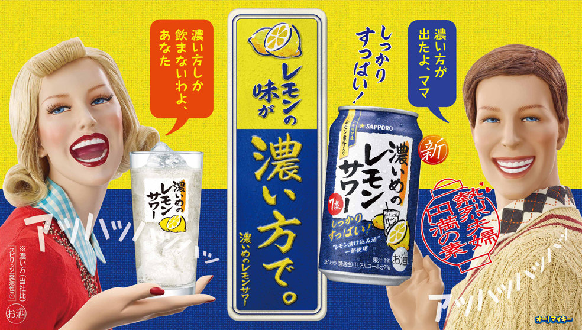

商品情報
- アルコール分
- 7％
- 原材料名
-
レモン果汁
ウォッカ（国内製造）
レモン浸漬酒／酸味料
炭酸
香料
甘味料（スクラロース、アセスルファムK）
酸化防止剤（ビタミンC） - 販売元
- サッポロビール株式会社
商品説明
サッポロ 濃いめのレモンサワー
レモン味濃いめのしっかりすっぱいレモンサワー
シチリア産手摘みレモン果汁と、レモン漬け込み酒を使用したレモン味濃いめのレモンサワーです。
爽やかな香りと、しっかりすっぱい味わいが特長。
後味もすっきりしていますので、お食事と一緒にお楽しみください。
注意
20歳未満の者の飲酒は法律で禁じられています
呑みレポ
名前に恥じぬ濃さです。
レモンの味が濃いとうたっていますが、アルコールの香りが強いです。
ウォッカが苦手な人には呑み切るのがキツい一品かもしれません
アルコールの香りは強いですが、爽やかとした酸っぱさも合間ってウォッカなどのお酒が好きな人にはオススメできます
呑み知識
シチリア産レモン
レモンサワーといえば”シチリア産レモン”です
シチリアレモンはエグみがなく、酸味が尖っていないとのことでお酒に扱うには適切なレモンと言えると思います
おつまみチョイス
チョイスできるおつまみの紹介を投稿しましたらリンクを貼ります
- ※投稿でき次第増やしていきます
- ※投稿でき次第増やしていきます
- ※投稿でき次第増やしていきます
- ※投稿でき次第増やしていきます
- ※投稿でき次第増やしていきます
おつまみ一覧
レモンサワー一覧
レモンサワーの投稿しましたらリンクを貼ります
- 金のレモンサワー
- ※投稿でき次第増やしていきます
- ※投稿でき次第増やしていきます
- ※投稿でき次第増やしていきます
- ※投稿でき次第増やしていきます
チューハイ一覧